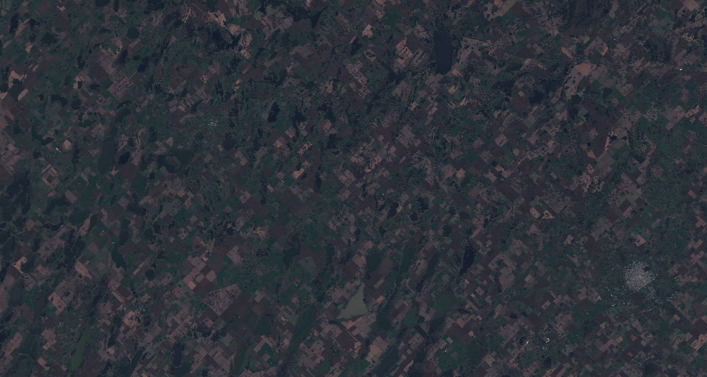
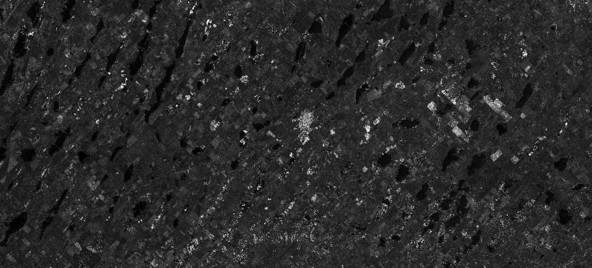

Metodología¶
Modelo de detección de cultivos.¶
En esta sección se detallan las fuentes de datos que están siendo utilizadas para el modelo de detección de cultivos, los procedimientos para calibrar las imágenes, y los resultados preliminares del modelo de aprendizaje automático aplicado.
Fuentes de datos¶
Imágenes satelitales¶
Para analizar los problemas que conciernen a la industria agropecuaria, la plataforma AgroScan es capaz de procesar tanto imágenes ópticas como de radar. Este tipo de datos luego se puede asociar con información metereológica y de sensores en terreno.
La resolución espacial de las imágenes de Sentinel-2 es de 10m por pixel para las bandas RGB (rojo, verde y azul) y NIR (infrarrojo cercano), y de 20m para el resto de las bandas del infrarrojo. El tiempo de revisita es de aproximadamente 10 días.

En el caso de que haya regiones cubiertas por nubes en algún momento del año, se completará con escenas de Sentinel-1. Este sensor es muy utilizado en la práctica para detectar inundaciones o edificaciones, dado que permite observar el suelo aún en climas desfavorables para la captura de imágenes.
Las firmas espectrales caputaras calculadas a partir de los datos de estos sensores permiten, mediante la aplicación de técnicas de machine learning, poder distinguir entre distintos tipos de cultivos y usos del suelo a lo largo del año y de los distintos tipos de geografía presentes en grandes extensiones.
Sensores IoT y Estaciones meteorológicas¶
Otras fuentes de datos compatible con la plataforma, son los obtenidos por sensores IoT o estaciones meteorológicas. La particularidad que tienen es que su actualización es constante, otorgándole la capacidad de generar alertas inmediatamente después de que se detecte algo por fuera de los límites establecidos como normales.
Los datos provenientes de estas fuentes permiten complementar los atributos generados a partir de los satélites, de manera tal de obtener detecciones más precisas

Preprocesamiento de imágenes¶
Sentinel-2¶
Para poder utilizar las imágenes multiespectrales de Sentinel-2 y las imágenes SAR de Sentinel-1 fue necesario aplicar una serie de pasos de calibración.
Dado que se descargaron escenas de nivel L1C para Sentinel-2, fue necesario ejecutar la herramienta de código abierto sen2cor, provista por la plataforma de la ESA. Este proceso realiza las correcciones atmosféricas y geométricas de las escenas y genera una versión de las imágenes a nivel bottom-of-atmosphere, designado como nivel L2A.
También genera una máscara de nubes, que luego utilizamos para descartar aquellos píxeles de la imagen que están cubiertos de nubes. Estos píxeles no son válidos para el modelo, y serán reemplazados por los de la imagen de Sentinel-1 del período correspondiente.
Para generar el mosaico, aplicamos la herramienta de código abierto sen2mosaic, para Python.
Sentinel-1¶
Para trabajar con las imágenes de este sensor para la detección de edificaciones y cambios en la cobertura del suelo, se descargaron escenas del producto GRD (Ground Range Detected) donde los valores de los píxeles representan la magnitud detectada. La resolución espacial de estas imágenes es de aproximadamente 10m por píxel.
Luego de descargar los productos se procede con la calibración radiométrica, que permite calcular el valor sigma0 de las bandas de polarización VV y VH. Al hacer esta calibración, también se utiliza el DEM de SRTM para ortorectificar las imágenes. El segundo paso es la eliminación del ruido Speckle con la aplicación de un filtro específico para este tipo de ruido, característico en las imágenes SAR.
El siguiente paso que realizamos es calcular la proporción VV/VH a partir de las bandas VV y HH, que es un atributo que utiliza el modelo de cobertura de suelo.
Finalmente se concatenan las 3 bandas en una sola imagen, y se corregistran de a pares de escenas con la herramienta AROSICS. Este paso es necesario para luego poder generar el mosaico en base a todas las escenas descargadas.